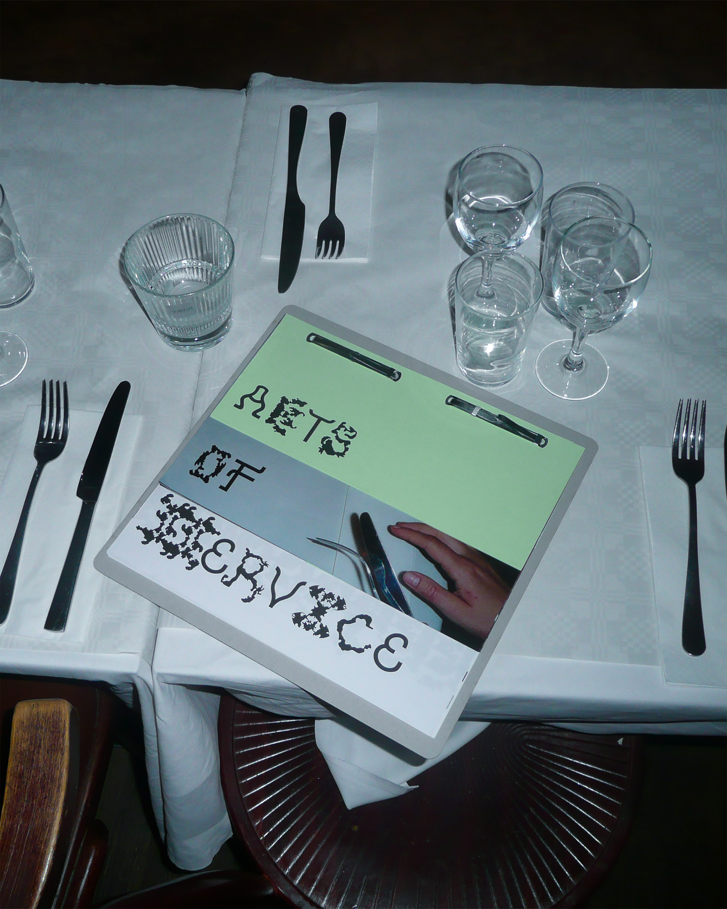

This website is part of my (Emmy Seeger) bachelor’s thesis at Beckmans College of Design,
2026, Stockholm.
Acts of Service is a typeface family developed from traces of service work.
The fonts are not drawn from predefined forms, but generated from collected material such as
stains, marks and repetitive gestures observed in a restaurant environment. The project explores
how knowledge that is usually invisible, relational, collective and bodily, can be translated
into typography. They are not designed for clarity, but for presence.
To this project there is an artist book (in Swedish), exhibited 21 — 25 May at
Avtryck, Beckmans College of Design graduation show.